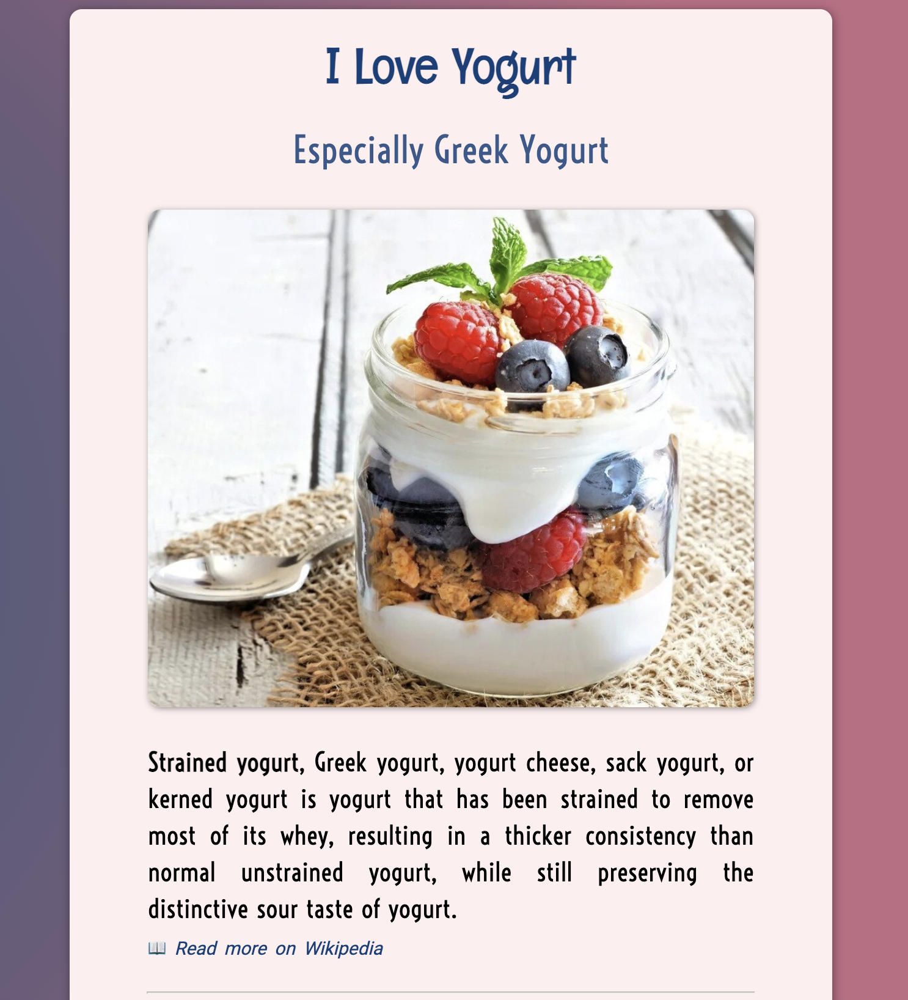
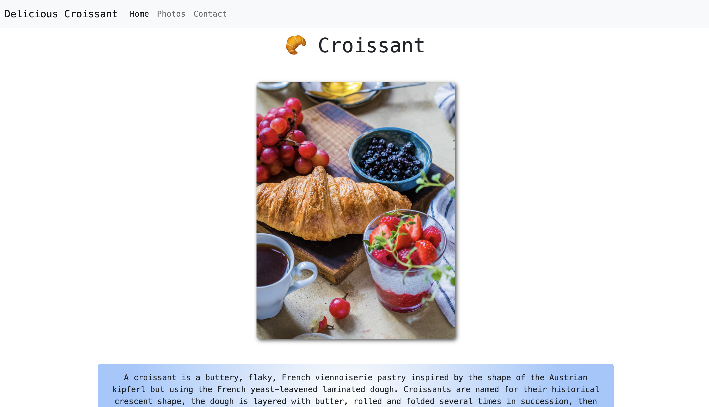

Yogurt Project
Built with HTML and CSS
Strained yogurt is a type of thickened yogurt that is regularly enjoyed throughout the Middle East and Mediterranean. It is eaten plain as a dip, and also used in cooking because it does not curdle at higher temperatures. The process of straining yogurt creates Greek yogurt (the popular, high-protein thickened yogurt sold in stores) and labneh (an even thicker yogurt that has the consistency of soft cream cheese). In this post I will show you how to strain yogurt at home; it’s a very simple process with delicious and healthful results.
See project hereCroissant Project
Built with HTML, CSS and Bootstrap
A croissant is a buttery, flaky, French viennoiserie pastry inspired by the shape of the Austrian kipferl but using the French yeast-leavened laminated dough. Croissants are named for their historical crescent shape, the dough is layered with butter, rolled and folded several times in succession, then rolled into a thin sheet, in a technique called laminating. The process results in a layered, flaky texture, similar to a puff pastry.
See project hereWeather Project

Built with HTML, CSS, Bootstrap and JavaScript
Engineers must understand global and localized weather patterns for many reasons. Environmental engineers are concerned with weather because it indicates how and when a pollutant may travel. Mechanical, electrical, computer and aerospace engineers must thoroughly understand weather when they design equipment and technology used outdoors or used to predict and measure weather, such as radar, satellites, storm sensors and weather modeling software applications.
See project here